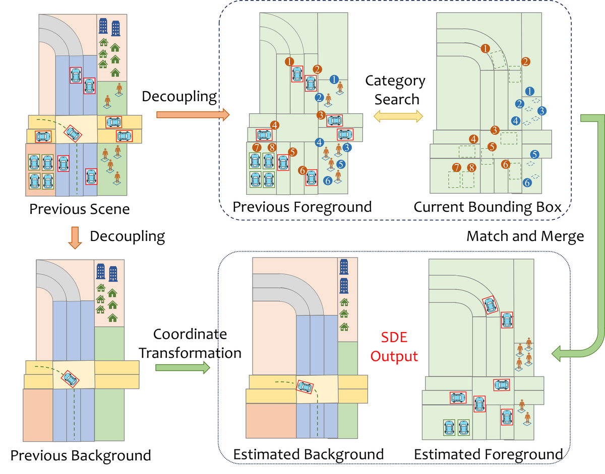
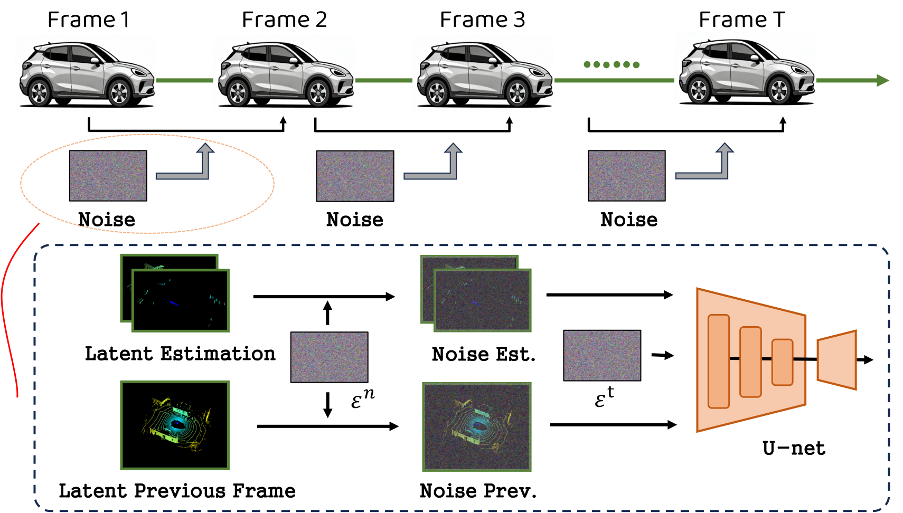
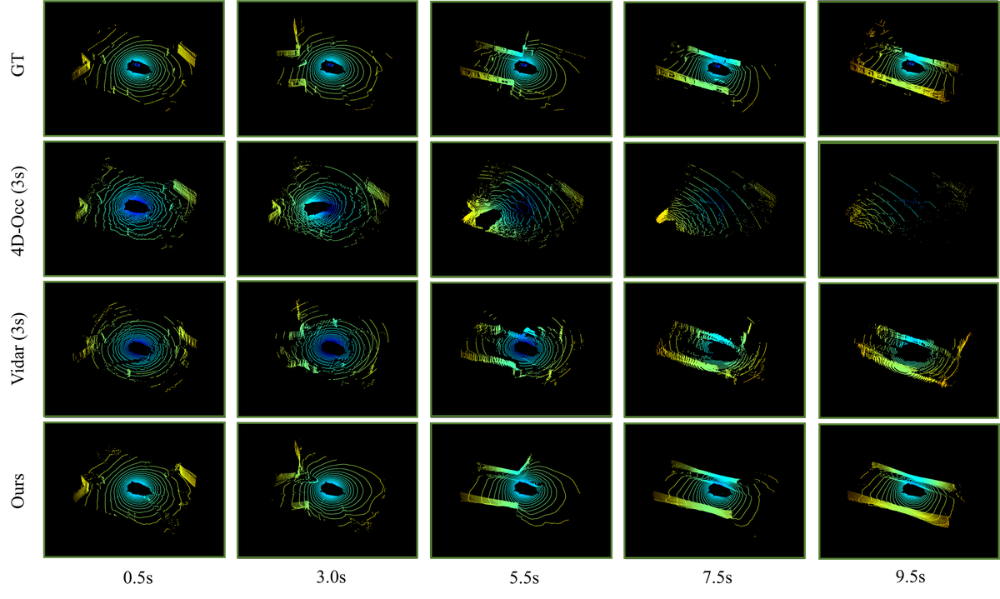
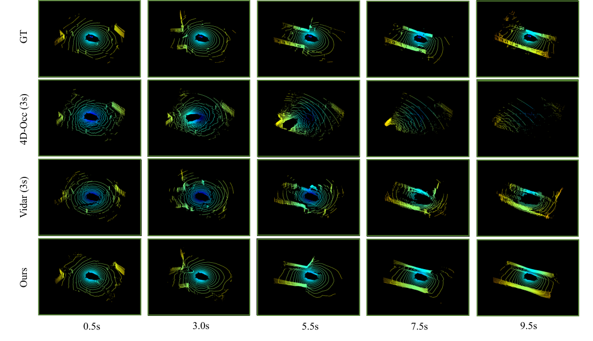

LaGen
简单摘要
这篇工作要解决的问题是：自动驾驶（AD）的生成世界模型已成为热门话题。
对应的核心做法是：与广泛研究的图像模态不同，在这项工作中，我们探索 LiDAR 数据的生成世界模型。
从机制上看，关键设计在于：现有的激光雷达数据生成方法仅支持单帧生成，而现有的预测方法需要多帧历史输入，并且只能一次确定性预测多帧，缺乏交互性。
训练或推理层面的重点是：这两种范式都无法支持长视野交互生成。
实验层面的主要信号是：为此，我们引入了LaGen，据我们所知，它是第一个能够逐帧自回归生成长视距激光雷达场景的框架。


简而言之，这篇论文关注的核心是：这篇工作要解决的问题是：自动驾驶（AD）的生成世界模型已成为热门话题。 对应的核心做法是：与广泛研究的图像模态不同，在这项工作中，我们探索 LiDAR 数据的生成世界模型。 从机制上看，关键设计在于：现有的激光雷达数据生成方法仅支持单帧生成，而现有的预测方法需要多帧历史输入，并且只能一次确定性预测…
这篇工作要解决的问题是：近年来，自主系统越来越受到学术界和工业界的关注。
对应的核心做法是：光探测和测距（LiDAR）是各种自主系统中的关键传感器之一。
从机制上看，关键设计在于：它提供了有关周围环境的精确而丰富的几何信息，并已广泛应用于各个领域。
训练或推理层面的重点是：与广泛研究的图像模态不同，激光雷达的研究仍然有限。
实验层面的主要信号是：现有研究主要集中在两个方向。
核心创新
综合引言与方法部分，这篇论文的核心创新可以概括为以下几方面：
1）问题定义与研究动机
这篇工作要解决的问题是：近年来，自主系统越来越受到学术界和工业界的关注。
对应的核心做法是：光探测和测距（LiDAR）是各种自主系统中的关键传感器之一。
从机制上看，关键设计在于：它提供了有关周围环境的精确而丰富的几何信息，并已广泛应用于各个领域。
训练或推理层面的重点是：与广泛研究的图像模态不同，激光雷达的研究仍然有限。
实验层面的主要信号是：现有研究主要集中在两个方向。
2）方法框架与核心模块
这篇工作要解决的问题是：LiDAR 数据的可逆且紧凑的表示。
对应的核心做法是：距离图像通过将 3D 空间中的非结构化点云参数化为 2D 像素空间，提供 LiDAR 数据的紧凑表示。
从机制上看，关键设计在于：具体来说，对于直角坐标系中的点 \( p = (x, y, z) R^3 \)，通过球面投影将其变换为球面坐标 \( (r, , ) \)。
训练或推理层面的重点是：我们采用校正后的距离图像表示如下。
实验层面的主要信号是：其中\(r\)表示深度值，\(\)为方位角，\(\)为仰角，\(h_j\)和\(_j\)表示通过霍夫投票估计的传感器高度和仰角。
3）实验设计与工程价值
这篇工作要解决的问题是：我们在具有挑战性的大规模公共 nuScenes 数据集上进行了实验。
对应的核心做法是：它包含从波士顿和新加坡地区收集的 1000 个自动驾驶序列。
从机制上看，关键设计在于：这两个城市以其密集的交通和极具挑战性的驾驶条件而闻名。
训练或推理层面的重点是：nuScenes 训练集包含 297,737 个 LiDAR 扫描，而验证集包含 52,423 个 LiDAR 扫描，每个 LiDAR 扫描包含 32 个光束。
实验层面的主要信号是：该数据集广泛用于自动驾驶中的各种任务，包括但不限于3D对象检测、多对象跟踪、轨迹预测、语义占用预测和端到端自动驾驶的开环规划。
技术细节
下面按照论文的方法章节结构展开，重点说明模型的关键模块、公式设计和训练策略。
这篇工作要解决的问题是：LiDAR 数据的可逆且紧凑的表示。
对应的核心做法是：距离图像通过将 3D 空间中的非结构化点云参数化为 2D 像素空间，提供 LiDAR 数据的紧凑表示。
从机制上看，关键设计在于：具体来说，对于直角坐标系中的点 \( p = (x, y, z) R^3 \)，通过球面投影将其变换为球面坐标 \( (r, , ) \)。
训练或推理层面的重点是：我们采用校正后的距离图像表示如下。
实验层面的主要信号是：其中\(r\)表示深度值，\(\)为方位角，\(\)为仰角，\(h_j\)和\(_j\)表示通过霍夫投票估计的传感器高度和仰角。
$$ \begin{aligned} r &= \sqrt{x^{2} + y^{2} + (z - h_{j})^{2}}, \\ \theta &= \arctan(y, x), \quad \phi = \phi_{j}, \end{aligned} $$
这条公式用于定义模型中的核心计算关系：左侧给出目标量，右侧由输入与参数共同决定。阅读时可先关注 r、x、y、z 的物理/几何含义，再看它们如何影响训练目标或渲染结果。
$$ u = W - ((\theta + \pi) / 2\pi) \cdot W, \quad v = H - j, $$
这条公式用于定义模型中的核心计算关系：左侧给出目标量，右侧由输入与参数共同决定。阅读时可先关注 u、W、v、H 的物理/几何含义，再看它们如何影响训练目标或渲染结果。
$$ \mathcal{L}_{\text{LDM}}=\mathbb{E}_{\epsilon_{t} \in \mathcal{N}(0,1), t \in \mathcal{U}[0, T], c}\left[\left\| \epsilon_{t}-\epsilon_{\theta}\left(z_{t} ; t, c\right)\right\| ^{2}\right], $$
这条公式用于定义模型中的核心计算关系：左侧给出目标量，右侧由输入与参数共同决定。阅读时可先关注 L、E、t、N 的物理/几何含义，再看它们如何影响训练目标或渲染结果。
$$ E_{\text{rel}}^{s-1} = (E_{\text{ego2glb}}^{s} \cdot E_{\text{li2ego}}^{s})^{-1} \cdot (E_{\text{ego2glb}}^{s-1} \cdot E_{\text{li2ego}}^{s-1}), $$
这条公式用于定义模型中的核心计算关系：左侧给出目标量，右侧由输入与参数共同决定。阅读时可先关注 s 的物理/几何含义，再看它们如何影响训练目标或渲染结果。
$$ \hat{z}^{s-1} = FiLM(z^{s-1}, E_{\text{rel}}^{s-1}), $$
这条公式用于定义模型中的核心计算关系：左侧给出目标量，右侧由输入与参数共同决定。阅读时可先关注 z、s 的物理/几何含义，再看它们如何影响训练目标或渲染结果。
$$ q = H_{B}, \quad k = H_{B}^{\text{prev}},\quad v = H_{B}^{\text{cur}}, $$
这条公式用于定义模型中的核心计算关系：左侧给出目标量，右侧由输入与参数共同决定。阅读时可先关注 q、B、k、v 的物理/几何含义，再看它们如何影响训练目标或渲染结果。



把全文方法串起来看，这篇论文的逻辑基本都遵循同一条主线：先把输入组织成更容易处理的表示，再通过模型结构和损失函数把这个表示推向目标输出，最后用可视化与数值实验共同证明该设计有效。
实验结论
实验部分主要回答两个问题：第一，方法是否真的优于已有基线；第二，这种优势来自哪一个设计决策。
这篇工作要解决的问题是：我们在具有挑战性的大规模公共 nuScenes 数据集上进行了实验。
对应的核心做法是：它包含从波士顿和新加坡地区收集的 1000 个自动驾驶序列。
从机制上看，关键设计在于：这两个城市以其密集的交通和极具挑战性的驾驶条件而闻名。
训练或推理层面的重点是：nuScenes 训练集包含 297,737 个 LiDAR 扫描，而验证集包含 52,423 个 LiDAR 扫描，每个 LiDAR 扫描包含 32 个光束。
实验层面的主要信号是：该数据集广泛用于自动驾驶中的各种任务，包括但不限于3D对象检测、多对象跟踪、轨迹预测、语义占用预测和端到端自动驾驶的开环规划。
- 方法在核心指标上的优势与结构设计和训练目标直接相关；
- 消融实验表明，拿掉关键模块后性能与结果质量都有明显回落；
- 论文不仅比较数值，也关注可视化质量、稳定性和泛化能力等更贴近真实使用的信号。
理解评价
这篇工作要解决的问题是：我们提出了 LaGen，这是一种能够以逐帧方式自回归生成长视距 LiDAR 场景的新颖框架。
对应的核心做法是：我们开发了一种以驾驶场景中的多种控制条件为条件的激光雷达数据生成器。
从机制上看，关键设计在于：我们通过场景解耦估计模块和噪声调制模块进一步增强了长视野生成的时空一致性。
训练或推理层面的重点是：我们全面评估了生成器在 nuScenes 数据集上的性能，并提出了一种基于 nuScenes 的协议来评估长范围生成任务。
实验层面的主要信号是：实验结果证明了LaGen框架的有效性和优越性。
如果把它当成研究参考，建议重点关注三件事：第一，这套方法真正依赖的归纳偏置是什么；第二，实验中真正拉开差距的模块是哪一个；第三，它的局限究竟来自数据、算力还是监督信号本身。
以下相关论文可以作为进一步追踪的入口：